UPCOMING:
2nd Murderer Full-length play SoHo Shakespeare Company, The Flea Theater (The Sam), New York, NYOctober - November 2025
______________________________________________
STAGED:
Eight Ways to Plead with a God Full-length play / 3 W, 4 M, 1 NB Six tourists and a local climbing guide set out to summit a historically insurmountable Himalayan mountain believed to be the abode of several Godly presences. As their physical limits, relationships to one another, and perceptions of reality are tested with each meter they climb, they are forced to strip down to their barest selves and find a way to achieve their new collective goal: survival.Staged Reading, January 5, 2025
The Whale Watch Reading Series at The East Village Basement, New York, NY
Directed by Phoebe Brooks
Featuring Walé Adebiyi, Zeina al-Barkouky, Michael Aurelio, Sahil Kaur, Deven Kolluri, Trí Lê, Saskia Naidoo, Janvi Sai, and Tenneh Sillah
Staged Reading, October 6, 2024 2024 NewWorks@TheWorks Playwriting Competition Playhouse in the Square, Memphis, TN
Staged Reading, June 14, 2024
Valdez Theatre Conference, Valdez, AK
Directed by Leslie Ishii
Featuring Rio Alberto, Lucas Calzada, Minita Gandhi, Kayla Amalia Gonzalez, Reagan James, Lamont Alexander Pierce, Aditi Sanghavi, and Peter Williams
MFA Thesis Production, August 12 & 14, 2022
Lenfest Center for the Arts, Columbia University, New York, NY
Directed by Liz Peterson
Featuring Sanskar Agarwal, Leyla Beydoun, Mazvita Chanakira, George Copeland, Isaiah Dodo-Williams, Tri Le, Saskia Naidoo, and Sabina Sethi Unni
Photos by Sy Chounchaisit
_______________________
Jyoti's Bridge Full-length play / 1 W, 1 M, 1 NB Jyoti is stuck in a death-reincarnation limbo. Accompanied by Anirudh, who housed her soul in the previous life, Jyoti must confront each of her seven chakras in a series of dream-like memories, made more complex by the presence of her shape-shifting demon, Raakshas. Jyoti's Bridge is an existential crisis that attempts to explore transmigrated joy and trauma, seemingly inexplicable connections, and inner peace.November 19 & 20, 2021
The Studio @ Schapiro, Columbia University, New York, NY
Directed by Phoebe Brooks
Featuring Sanskar Agarwal, Saskia Naidoo, and Sheherazaad
Photos by Phoebe Brooks
_______________________
The Divine Feminine One-act play / 3 W, 4 M Devi and Vishnu are Hindu chaplains in training. But how can they advise others when they're busy dealing with identity crises of their own? This play explores faith as a means of comfort and guidance, but also questions whether or not religious leaders are doing the right thing in attempting to interpret and convey the words of Gods.November 15, 2020
Fresh Lime Soda Productions x Wellesley College WASAC, Online
Directed by Sabina Sethi Unni
Featuring Lucky Bommireddy, Bhavana Vadrevu, Kuku Devarajan, Anjali Sundaram, Maryam Mustafa, Kavya Parameswar, Maryam Ahmad
_______________________
Ghost Play One-act play / 5 W, 5 M, 1 NB Between her mother, two type-A lawyers, and major insecurities, can Rohini find a way to make herself happy? A love (?) story set in a courtroom in a parallel universe, this play considers the challenges young South Asian women face in today's dating world, unlearning how to please everyone but ourselves, and what we're really thinking when we ghost someone.February 14, 2020
Fresh Lime Soda Productions, The Riverside Church, New York, NY
Staged Reading directed by Sabina Sethi Unni
Photos by Adri Tan
_______________________
Heliconia Ten-minute play / 2 W, 2 M, 1 NB In this abridged adaptation of A Midsummer Night’s Dream, Chevron employees are sentenced to eighteen months of reforestation and water purification efforts in Brazil for permitting hazardous waste leakage into the Amazon River. While in the rainforest, the defamed lovers are spellbound and given tasks by Paz, a native spirit. This adaptation attempts to return voice and give agency to the indigenous communities directly impacted by corrupt foreign decision-making and pollution, while still maintaining the original work’s dreamy, comedic feel.November 17, 2019
Climate Change Theatre Action x The Year of Water: Play Readings for Change
Lenfest Center for the Arts, Columbia University, New York, NY
Staged Reading directed by Jorge Schultz
Featuring Mazvita Chanakira, HanJie Chow, Yvonne Cole, Daphne Kinard, Hannah Shealy, and Sina Pooresmaeil
______________________________________________
WRITTEN/IN PROGRESS:
Agni’s Dream Full-length play / 7 people, any gender_______________________
organic Solo show / 1 W or NB_______________________
Meyer v. Malaysia Full-length play / 6 W, 5 M Newly minted legal assistant Krish wants adventure. On a high-stakes, all-expenses-paid work trip to Paris for an international arbitration hearing, Krish realizes that law might not be the safe, boring profession she (and her parents) thought it was. Soon, she becomes enamoured with the drama, stakes, and potential danger involved in the job, and contemplates "selling out" after all._______________________
Arjun's Dilemma Full-length play / 5 W, 4 M, 1 NB Asavari is an emotionally repressed twenty-something art student living in New York City. When her mother's chronic illness becomes considerably worse, Asavari is forced to return to her childhood home in the suburbs and reconcile with the ghosts of her and her family's younger selves. As Asavari ventures to protect her family from outside forces, she must ask herself if she's the one really hurting everyone else._______________________
Old Boys Two-act musical / 5 M (with an ensemble of 5-7 people) Music by Lucky BommireddyIn the early 1980s, Prashant is given a scholarship to attend the Doon School, a British all-boys boarding school in northern India. Naive Prashant must find a way to stay focused, maintain his integrity, and fulfill his parents' expectations as the family's "investment" without being seduced by the excitement of climbing social structures within the school.
_______________________
First Encounter Three short plays / 6 W, 7 M In India…a thief confronts a snake guarding a box of family treasures. A young woman faces a dilemma when one of the cockroaches in her apartment seems a little more familiar than the others. A group of staff workers at a luxury safari lodge double as the troop of exotic animals white tourists have flocked to see._______________________
Sharks and Minnows One-act play / 1 W, 3M, 1 NB When high school student Richie gets separated from his class during a field trip to a local aquarium facing low attendance rates, employees Hara, Jo, Martin, and Eli must find a way to make Richie feel at home for the night during a city-wide blackout. In the process, the employees are schooled by the student on new ways to connect with and appreciate their own marine life, potentially saving the aquarium from bankruptcy._______________________
Nocturnal Admissions One-act play / 4 W, 4 M In this morality-ish play, eight horny teenagers get high on peyote at an unsupervised sleepover in a creepy cabin by the lake. Nothing could go wrong, right? Mom?_______________________
Please Clap Half-hour dark comedy pilot 22-year-old Sita returns to her congressional staffer job on Capitol Hill after being hospitalized for a suicide attempt, and explores the depths of her mind through stand-up comedy and political speechwriting in a quest for self-acceptance and familial pride._______________________
Toasted Half-hour comedy pilot When dutiful and impressionable Amina begins her first year at an ultra-liberal historically women's college, she must reconcile her burgeoning new identity with her relationship to her faith and traditional parents while being charmed by unapologetically loud new friends, professors, and crushes._______________________
Jet Lag Collection of short stories Surya is an impulsive college kid grappling with questions of queerness, race, culture, family, and home. Her multiple identities cause her to feel continuously of sync with her surroundings. Her only way to cope is to learn how to ground herself in the territory between time zones and come to terms with herself._______________________
"Growing with Wellesley" Speech A love letter to my alma mater._____________________________________________

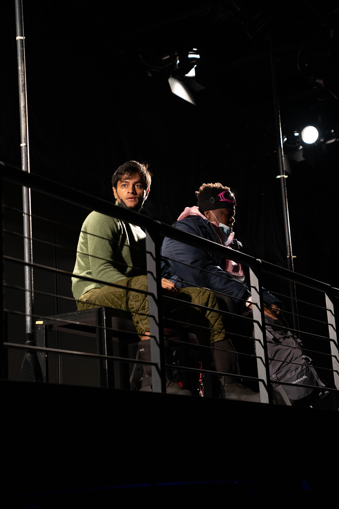
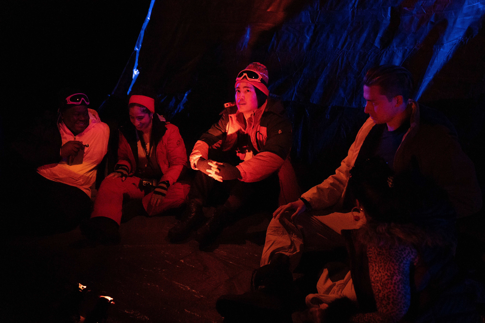


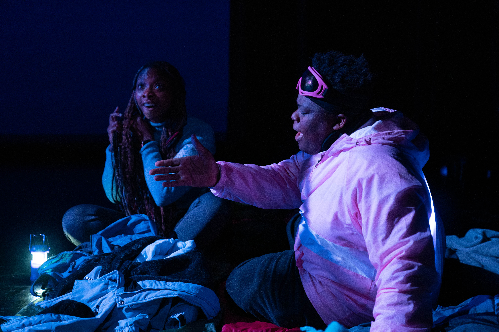

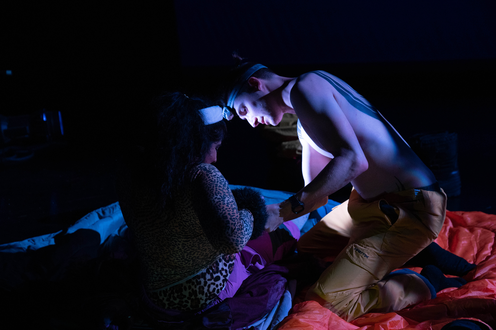
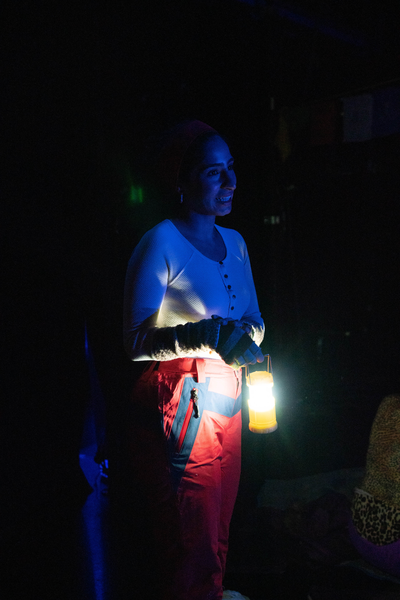


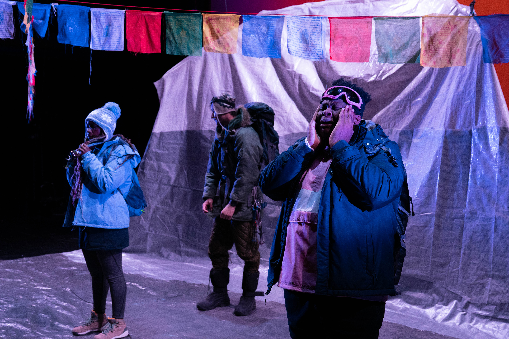
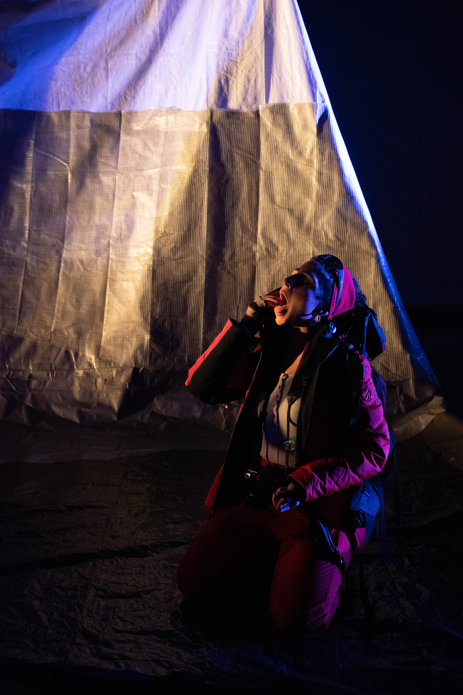
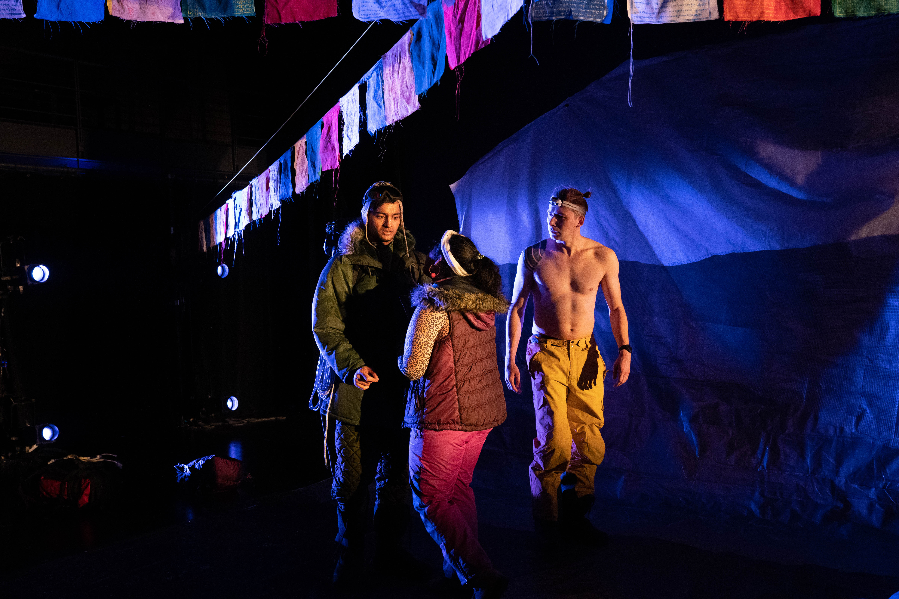


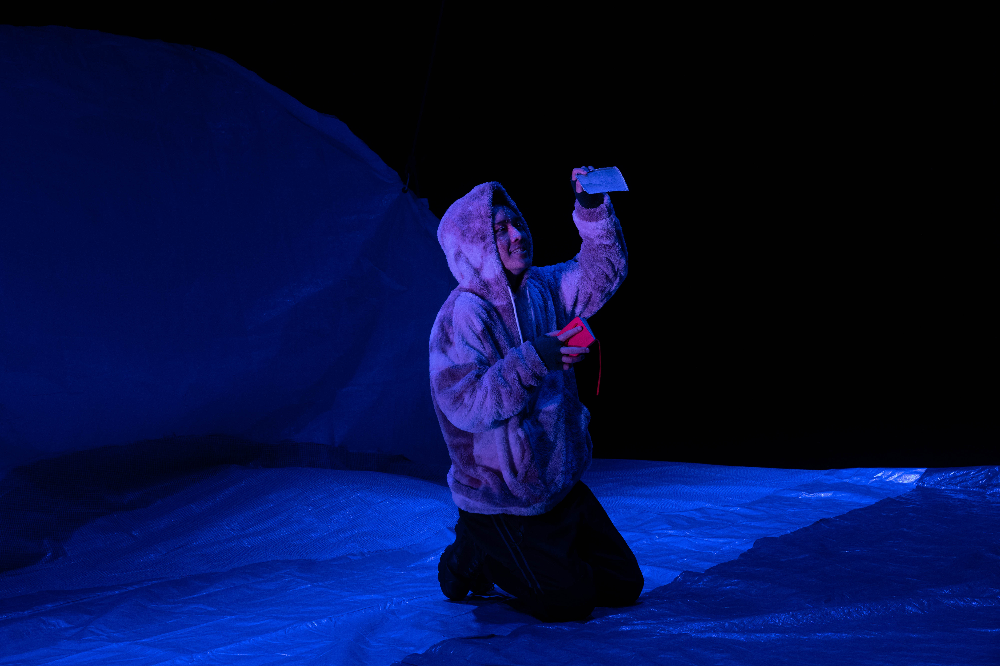

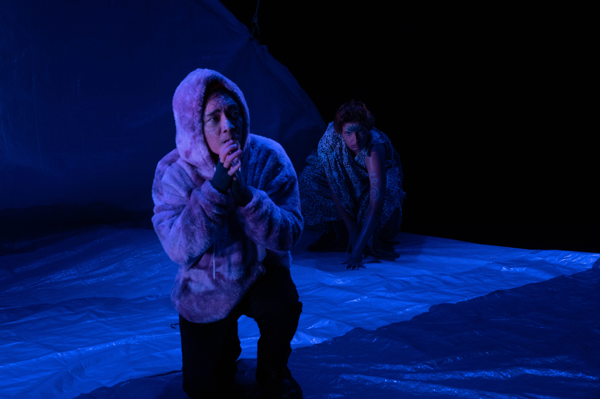
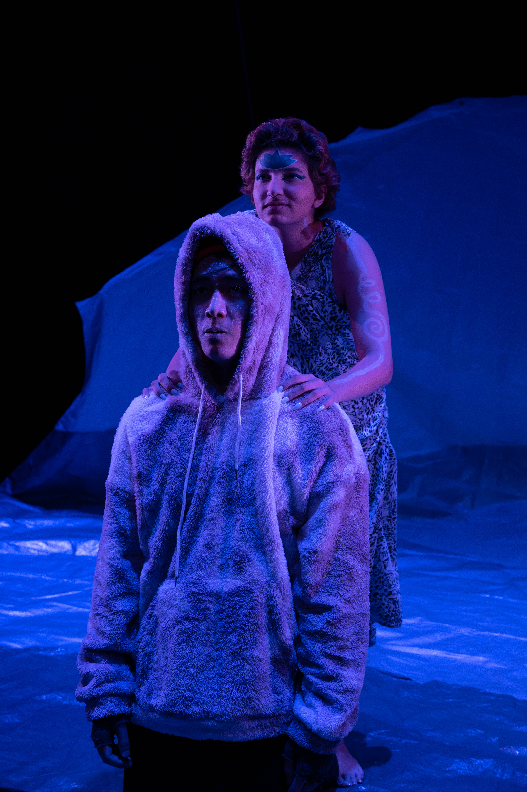


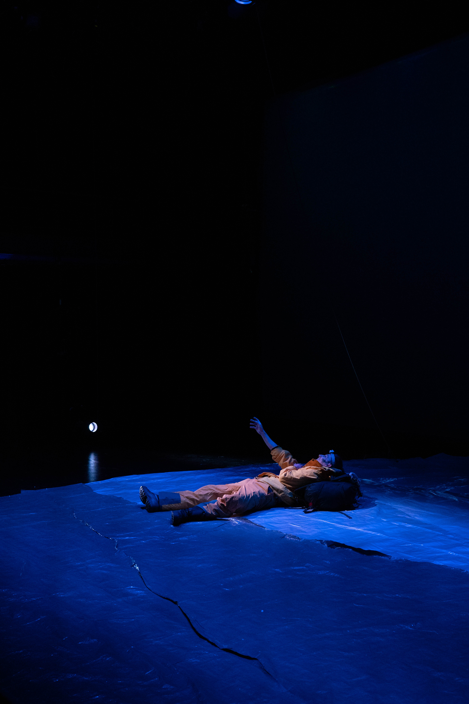


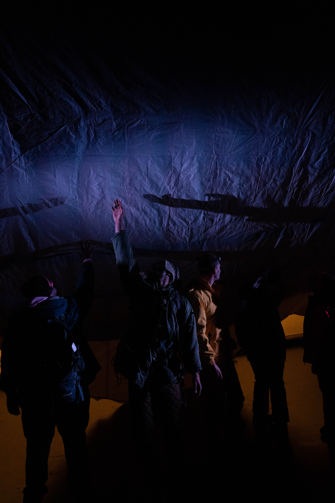
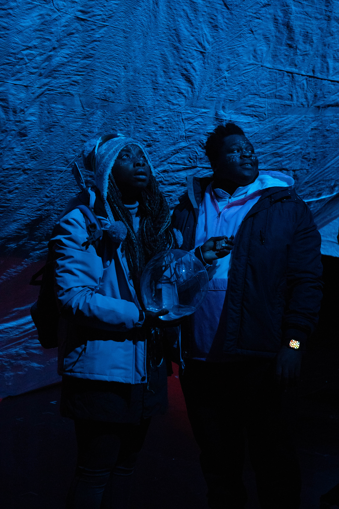